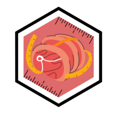

Data
data_documentation.RmdPackage Data
There are two data-sets embedded in meatrics:
expert_graders and devices. Both datasets
emulate the expected format of the input data-frame(s) for all
functions.
# load human grader data
data("expert_graders")
expert_graders## # A tibble: 17,148 × 9
## # Groups: kill_date, body_no [5,716]
## kill_date body_no cold_grader fat_co…¹ meat_…² ribfa…³ aus_m…⁴ msa_m…⁵ ema
## <date> <chr> <fct> <fct> <chr> <dbl> <fct> <dbl> <dbl>
## 1 2021-01-29 181 G1 2 2 3 3 NA 99
## 2 2021-01-29 182 G1 1 3 NA 2 NA 86
## 3 2021-01-29 184 G1 0 2 NA 3 NA 99
## 4 2021-01-29 185 G3 1 3 NA 3 NA 86
## 5 2021-01-29 231 G2 0 3 NA 3 NA 95
## 6 2021-01-29 233 G3 1 2 NA 2 NA 95
## 7 2021-01-29 236 G3 0 2 NA 3 NA 99
## 8 2021-01-29 238 G3 0 3 NA 2 NA 86
## 9 2021-01-29 239 G1 1 4 NA 2 NA 95
## 10 2021-01-29 240 G3 0 3 NA 3 NA 95
## # … with 17,138 more rows, and abbreviated variable names ¹fat_colour,
## # ²meat_colour, ³ribfat_cold, ⁴aus_marbling, ⁵msa_marbling
## # ℹ Use `print(n = ...)` to see more rows
# load device data
data("devices")
devices## # A tibble: 5,544 × 10
## # Groups: kill_date, body_no [608]
## kill_date body_no cold_grader fat_co…¹ meat_…² ribfa…³ aus_m…⁴ msa_m…⁵ ema
## <date> <chr> <fct> <fct> <fct> <dbl> <fct> <dbl> <dbl>
## 1 2021-12-06 192 C1 0 4 NA 1 360 74
## 2 2021-12-06 192 C1 1 4 NA 1 370 74
## 3 2021-12-06 192 C1 0 4 NA 1 340 75
## 4 2021-12-06 194 C1 0 3 NA 1 370 65
## 5 2021-12-06 192 C3 0 4 NA 1 310 72
## 6 2021-12-06 194 C1 0 3 NA 2 410 66
## 7 2021-12-06 192 C3 1 4 NA 1 300 74
## 8 2021-12-06 194 C1 0 3 NA 1 400 67
## 9 2021-12-06 192 C3 0 4 NA 1 350 73
## 10 2021-12-06 195 C3 0 4 NA 1 300 82
## # … with 5,534 more rows, 1 more variable: image <int>, and abbreviated
## # variable names ¹fat_colour, ²meat_colour, ³ribfat_cold, ⁴aus_marbling,
## # ⁵msa_marbling
## # ℹ Use `print(n = ...)` to see more rows, and `colnames()` to see all variable namesTraits should follow the naming conventions of these sample datasets
as some functions may rely on these to recognize the appropriate trait.
Most functions rely on pivoting the data-frame to a wide format, using
to_wide() . Other data-processing functions include
merge_device_grader() which outputs a merged data-frame in
wide format and merge_device_grader_long() which outputs a
merged data-frame in long format.